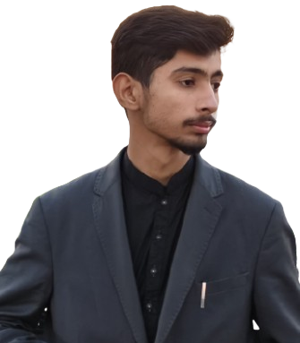

Hi! I'm Syed Kazim Ali, a Computer Science student with a passion for AI, Game Development, Mobile Apps, and Data Science. I believe in creativity, financial freedom, and making a massive impact with technology.
My dream is to one day run my own software house and work with industry leaders like Google and Microsoft along the way. I'm driven by curiosity, constant learning, and the thrill of building things that matter.
When I'm not coding, you'll find me eating good food, staying fit, and exploring new ideas.